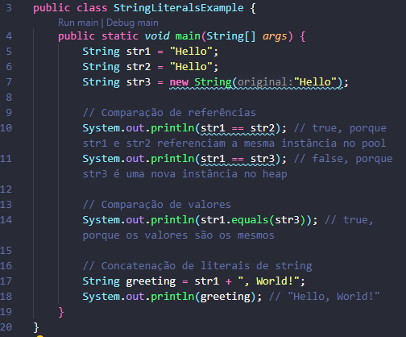

Uma lieral de string em Java é uma sequência de caracteres delimitada por aspas duplas ('"'). Elas são usadas para representar valores constantes de 'strings' diferetamente no código.
Literais de string são imutáveis. Isso significa que umavez criadas, seu valor não pode ser alterado.
Java utiliza um pool de strings para otimizar o uso de memória. Qual uma literal de string é criada, o compilador verifica se uma instância com o mesmo valor já existe no pool. Se existir, a referência para essa instância é retornada. Se não, uma nova instância é criada e adicionada ao pool.
A concatenação de literais de string é eficiente devido ao usso do 'StringBuilder' do compilador.
Aqui está um exemplo que demonstra o uso de literais de string e o conceito de pooling de string:
Neste exemplo 'str1' e 'str2' apontam para a mesma instância de pool de strings, enquanto 'str3' é uma nova instância no heao, ilustrando a diferença entre pooling de strings e novas instância criadas com 'new'.